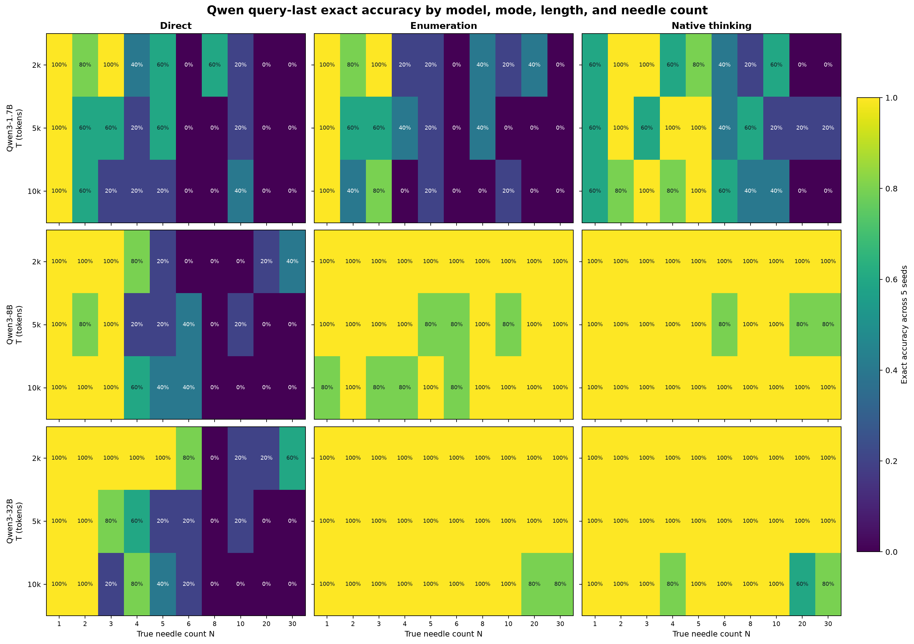
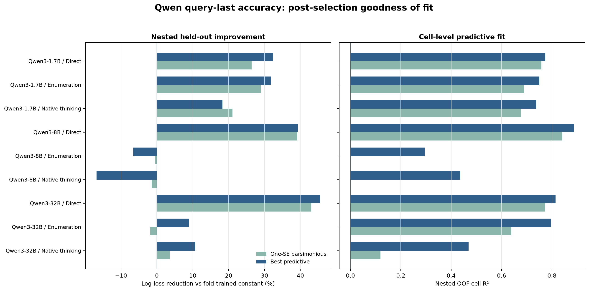
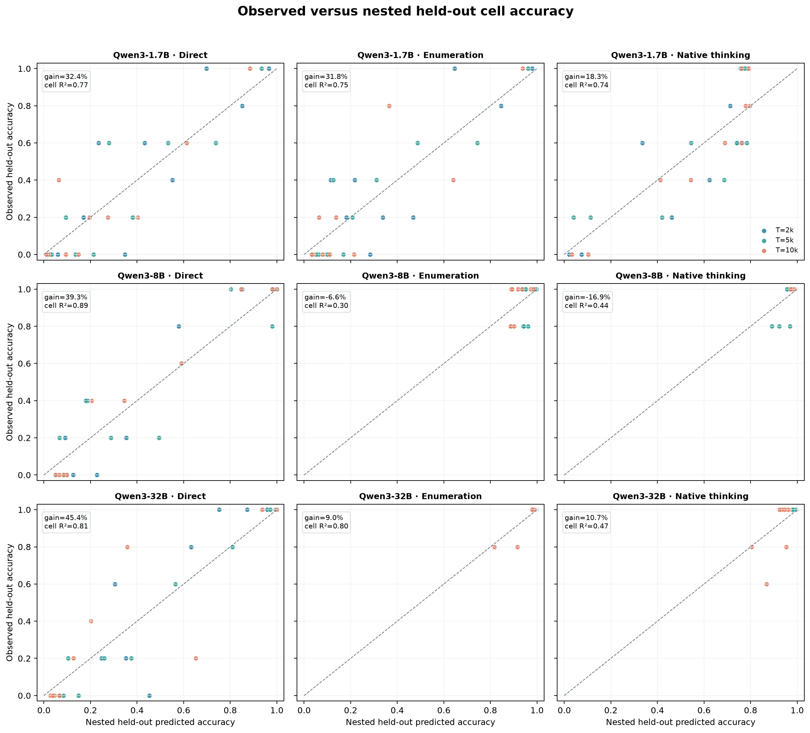
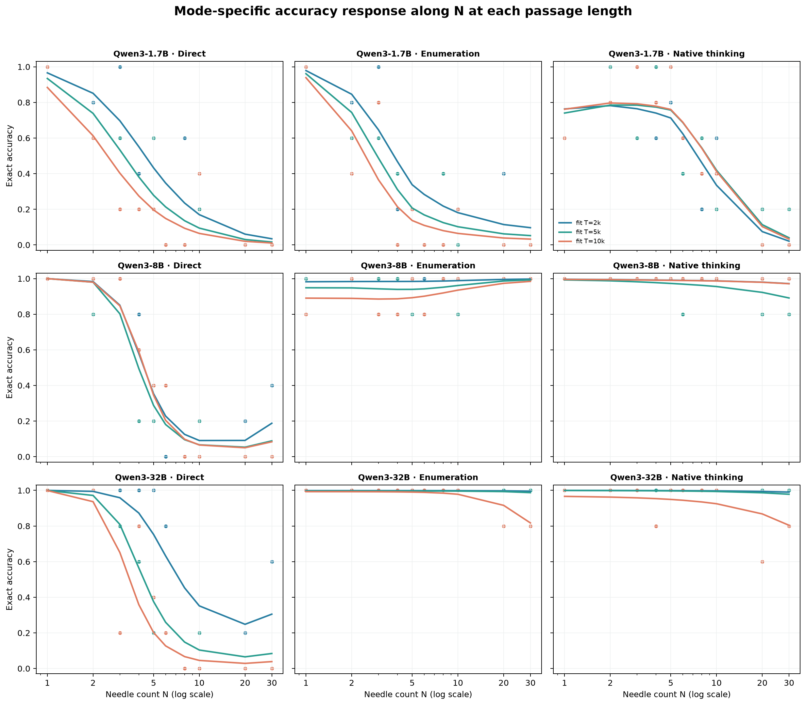
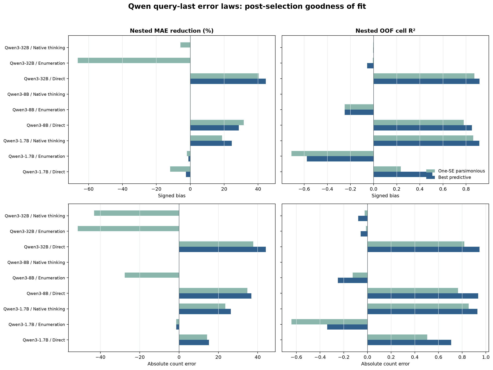

结论先行
有强 held-out 支持的 strata： Qwen3-1.7B / Direct；Qwen3-1.7B / Enumeration；Qwen3-1.7B / Native thinking；Qwen3-8B / Direct；Qwen3-32B / Direct。
错误事件不足 10 个、无法稳定估斜率： Qwen3-8B / Enumeration；Qwen3-8B / Native thinking；Qwen3-32B / Enumeration；Qwen3-32B / Native thinking。
有强支持的 bias laws： Qwen3-1.7B / Native thinking；Qwen3-8B / Direct；Qwen3-32B / Direct。
最稳定的 counting-mechanism 信号仍然来自 direct：准确率随 N 增大而显著下降； Qwen3-8B/32B 的 direct signed bias 与 absolute error 也有可预测的 T–N response surface。 Qwen3-1.7B enumeration 的 bias 被少量巨大 overcount 主导，扩展搜索后仍不能在 held-out 数据上优于常数基线，因此正式结论是“当前样本未发现稳定统一 law”，而不是继续试到训练集 R² 好看为止。
所有 headline 使用外层留一 seed 的 post-selection 预测；每个外层折内重新执行候选选择。显著性使用完整 (T,N) cell 聚类 bootstrap，并在同一 target 的 9 个 strata 内做 BH-FDR。
三种 mode 可以且确实选择了不同函数。Direct 的规律最可识别；8B/32B 的 enumeration/native-thinking 主要受 ceiling 限制；1.7B enumeration 的数值误差主要受不稳定长尾限制。
1. 实验设置与 Prompt 格式
本报告是正式 6,300-request 实验的只读子集：
model ∈ {Qwen3-1.7B, Qwen3-8B, Qwen3-32B} 且
query_order=query_last。没有重跑模型、删除请求或修改 parser。
Qwen/Qwen3-8B 计算的 passage tokens。Query-last 外层结构
<passage> [PASSAGE] </passage> [TASK BLOCK]
Direct 与 native thinking 的 task block
The passage contains one or more city-score audit records. A city-score audit record names one city and gives that city's numeric score. How many city-score audit records are in the passage? In the final answer, output exactly one line in this form: Total: <integer>
Enumeration 的 task block
The passage contains one or more city-score audit records. A city-score audit record names one city and gives that city's numeric score. Find every city-score audit record in the passage. In passage order, output one record per line as: <k>. <city>: <score> where k starts at 1 and increases by 1. Then output one final line: Total: <integer> Do not include any other text.
Direct 与 native thinking 的 user message 相同；差异只在 Qwen 官方 chat template 的
enable_thinking 和 decoding budget。Enumeration 使用要求列举全部记录的独立 task block。
查看 Qwen3-8B direct 的 redacted rendered prompt
<|im_start|>user <passage> [PASSAGE OMITTED] </passage> The passage contains one or more city-score audit records. A city-score audit record names one city and gives that city's numeric score. How many city-score audit records are in the passage? In the final answer, output exactly one line in this form: Total: <integer><|im_end|> <|im_start|>assistant <think> </think>
查看 Qwen3-8B native-thinking 的 redacted rendered prompt
<|im_start|>user <passage> [PASSAGE OMITTED] </passage> The passage contains one or more city-score audit records. A city-score audit record names one city and gives that city's numeric score. How many city-score audit records are in the passage? In the final answer, output exactly one line in this form: Total: <integer><|im_end|> <|im_start|>assistant
| Model | Mode | Thinking | Max output | Temp. | top-p | top-k | Rendered prompt SHA256 (sample) |
|---|---|---|---|---|---|---|---|
| Qwen3-1.7B | Direct | off | 64 | 0.0 | 1.00 | -1 | f1fcf490751b58848037482fa21eb4cf8af8c08ed9153d59f88f8d13ac9219b9 |
| Qwen3-1.7B | Enumeration | off | 1536 | 0.0 | 1.00 | -1 | 46ee04dbcbe5ac45f8776c04bf36d08183ad5de3b6f407f5396cd731ff769146 |
| Qwen3-1.7B | Native thinking | on | 4096 | 0.6 | 0.95 | 20 | 245c58b5fa44dd1b6574a86dc0a31c836f88197f83d30d12f41ed02a2a111d41 |
| Qwen3-8B | Direct | off | 64 | 0.0 | 1.00 | -1 | f1fcf490751b58848037482fa21eb4cf8af8c08ed9153d59f88f8d13ac9219b9 |
| Qwen3-8B | Enumeration | off | 1536 | 0.0 | 1.00 | -1 | 46ee04dbcbe5ac45f8776c04bf36d08183ad5de3b6f407f5396cd731ff769146 |
| Qwen3-8B | Native thinking | on | 4096 | 0.6 | 0.95 | 20 | 245c58b5fa44dd1b6574a86dc0a31c836f88197f83d30d12f41ed02a2a111d41 |
| Qwen3-32B | Direct | off | 64 | 0.0 | 1.00 | -1 | f1fcf490751b58848037482fa21eb4cf8af8c08ed9153d59f88f8d13ac9219b9 |
| Qwen3-32B | Enumeration | off | 1536 | 0.0 | 1.00 | -1 | 46ee04dbcbe5ac45f8776c04bf36d08183ad5de3b6f407f5396cd731ff769146 |
| Qwen3-32B | Native thinking | on | 4096 | 0.6 | 0.95 | 20 | 245c58b5fa44dd1b6574a86dc0a31c836f88197f83d30d12f41ed02a2a111d41 |
Prompt、decoding 参数与 rendered-prompt SHA256 均从冻结 request 审计表读取；每个 Qwen×mode 组合逐行核对。passage body 仅在展示时替换为 [PASSAGE OMITTED]。
三个 checkpoint 的消息结构一致；mode 差异来自 task block 或官方 thinking 开关，不是隐含的额外提示。
2. 拟合目标、候选函数与拟合优度
r 表示一个具体的 Qwen checkpoint × mode × target。函数族相同，但 变换 g、坐标项 φ、项数 J 与参数 α/β 都允许随 r 改变；因此没有强迫 direct、enumeration、native thinking 使用同一条曲线。
100×(L_null−L_model)/L_null。正值为改善；
负值表示选型后仍不如常数。外层 5 folds 每次留出一个 seed；内层仅用其余 4 seeds 再做留一 seed 选择。这样报告的 nested 指标没有让 held-out seed 参与公式选择。48 个候选在分析前写入脚本并全部保留。
“理想拟合”按 held-out loss、校准、cell R²、跨 N/T 泛化和 bootstrap 稳定性共同定义；训练集 R² 或单张漂亮曲线不能单独构成证据。
3. 先看观测准确率
| Model | Mode | Exact | Accuracy | Parsed | Parse rate | Mean bias | MAE |
|---|---|---|---|---|---|---|---|
| Qwen3-1.7B | Direct | 52/150 | 34.7% | 150/150 | 100.0% | +2.53 | 5.16 |
| Qwen3-1.7B | Enumeration | 50/150 | 33.3% | 138/150 | 92.0% | +36.93 | 38.42 |
| Qwen3-1.7B | Native thinking | 83/150 | 55.3% | 148/150 | 98.7% | -1.26 | 1.47 |
| Qwen3-8B | Direct | 64/150 | 42.7% | 150/150 | 100.0% | +2.35 | 2.61 |
| Qwen3-8B | Enumeration | 143/150 | 95.3% | 149/150 | 99.3% | -0.04 | 0.04 |
| Qwen3-8B | Native thinking | 147/150 | 98.0% | 147/150 | 98.0% | +0.00 | 0.00 |
| Qwen3-32B | Direct | 72/150 | 48.0% | 150/150 | 100.0% | +1.91 | 1.97 |
| Qwen3-32B | Enumeration | 148/150 | 98.7% | 150/150 | 100.0% | -0.03 | 0.03 |
| Qwen3-32B | Native thinking | 146/150 | 97.3% | 150/150 | 100.0% | +0.01 | 0.07 |

Exact accuracy 分母固定为每 stratum 150；parse failure、格式错误和 truncation 全部计 0。Bias/MAE 只在成功解析数值的请求上计算，不能把未解析请求伪装成 bias=0。
1.7B 三种 mode 仍有大量错误；8B/32B direct 约为中等准确率，而 enumeration/native thinking 达到 95.3%–98.7%，因此后两类的斜率估计受低事件数限制。
4. 每个模型 × mode 的 Accuracy law
下表是 best-predictive pipeline。每一行都允许选择不同坐标、interaction 与 ridge； “Full-data fitted equation”给出在全部 150 请求上重拟合后的参数，但拟合优度完全来自 nested held-out 预测。
| Model | Mode | n | Selected form | Full-data fitted equation | Nested loss / null | Gain | Brier | ECE | Cell R² | Cal. slope | Leave-N gain | Leave-T gain | FDR q | Evidence |
|---|---|---|---|---|---|---|---|---|---|---|---|---|---|---|
| Qwen3-1.7B | Direct | 150 | Log T + curved log N; ridge=0.3 | 0.438 / 0.648 | +32.4% | 0.141 | 0.041 | 0.774 | 0.91 | +34.1% | +37.9% | 0.003 | Strong + cross-N/T | |
| Qwen3-1.7B | Enumeration | 150 | Log T + piecewise log N; ridge=0.03 | 0.443 / 0.650 | +31.8% | 0.141 | 0.048 | 0.750 | 0.88 | +29.6% | +35.7% | 0.003 | Strong + cross-N/T | |
| Qwen3-1.7B | Native thinking | 150 | Log T + piecewise log N; ridge=0.3 | 0.578 / 0.707 | +18.3% | 0.188 | 0.066 | 0.738 | 0.70 | +18.9% | +24.2% | 0.026 | Strong + cross-N/T | |
| Qwen3-8B | Direct | 150 | Log T + curved log N; ridge=0.3 | 0.416 / 0.686 | +39.3% | 0.116 | 0.070 | 0.887 | 0.74 | +50.7% | +33.1% | 0.003 | Strong + cross-N/T | |
| Qwen3-8B | Enumeration | 150 | Log T + linear N; ridge=0.3 | 0.216 / 0.203 | -6.6% | 0.047 | 0.058 | 0.296 | 0.03 | +8.3% | +1.6% | 0.788 | Ceiling-limited | |
| Qwen3-8B | Native thinking | 150 | T-specific log-N slopes; ridge=0.3 | 0.127 / 0.108 | -16.9% | 0.021 | 0.033 | 0.436 | -0.53 | +25.4% | -22.0% | 0.836 | Ceiling-limited | |
| Qwen3-32B | Direct | 150 | Log T + curved log N; ridge=0.3 | 0.381 / 0.698 | +45.4% | 0.124 | 0.064 | 0.814 | 0.96 | +45.4% | +36.7% | 0.003 | Strong + cross-N/T | |
| Qwen3-32B | Enumeration | 150 | T-level intercepts + log N; ridge=0.03 | 0.069 / 0.076 | +9.0% | 0.015 | 0.006 | 0.796 | 0.50 | +41.0% | -28.5% | 0.113 | Ceiling-limited | |
| Qwen3-32B | Native thinking | 150 | T-level intercepts + log N; ridge=0.3 | 0.116 / 0.129 | +10.7% | 0.026 | 0.013 | 0.469 | 0.46 | +23.8% | -4.7% | 0.340 | Ceiling-limited |



查看 one-SE 与 best-predictive 的选型敏感性
| Model | Mode | One-SE form | Best-predictive form | Nested gain: one-SE / best | Cell R²: one-SE / best | Outer-choice stability: one-SE / best |
|---|---|---|---|---|---|---|
| Qwen3-1.7B | Direct | Log N only; ridge=0.3 | Log T + curved log N; ridge=0.3 | +26.4% / +32.4% | 0.758 / 0.774 | 0.60 / 0.40 |
| Qwen3-1.7B | Enumeration | Log N only; ridge=0.3 | Log T + piecewise log N; ridge=0.03 | +29.0% / +31.8% | 0.690 / 0.750 | 1.00 / 0.20 |
| Qwen3-1.7B | Native thinking | Linear N only; ridge=0.3 | Log T + piecewise log N; ridge=0.3 | +21.1% / +18.3% | 0.677 / 0.738 | 1.00 / 0.40 |
| Qwen3-8B | Direct | Log N only; ridge=0.3 | Log T + curved log N; ridge=0.3 | +39.2% / +39.3% | 0.840 / 0.887 | 0.60 / 0.60 |
| Qwen3-8B | Enumeration | Constant; ridge=0.3 | Log T + linear N; ridge=0.3 | -0.5% / -6.6% | -0.000 / 0.296 | 1.00 / 0.60 |
| Qwen3-8B | Native thinking | Constant; ridge=0.3 | T-specific log-N slopes; ridge=0.3 | -1.5% / -16.9% | -0.000 / 0.436 | 1.00 / 0.00 |
| Qwen3-32B | Direct | Log T + curved log N; ridge=0.3 | Log T + curved log N; ridge=0.3 | +43.0% / +45.4% | 0.773 / 0.814 | 0.40 / 0.80 |
| Qwen3-32B | Enumeration | Log burden; ridge=0.3 | T-level intercepts + log N; ridge=0.03 | -1.9% / +9.0% | 0.638 / 0.796 | 0.60 / 0.60 |
| Qwen3-32B | Native thinking | Constant; ridge=0.3 | T-level intercepts + log N; ridge=0.3 | +3.6% / +10.7% | 0.119 / 0.469 | 0.80 / 0.40 |
Accuracy 对每个请求拟合 Bernoulli logistic family；主 loss 为 log loss，另报告 Brier、ECE、calibration slope、cell R²、leave-N 和 leave-T。低于 10 个 failure 的 strata 不作斜率显著性宣称。
1.7B 三种 mode 与 8B/32B direct 都存在可复现 N-dependent response；8B/32B 的 enumeration/native-thinking 因错误过少而 ceiling-limited，即使复杂式偶尔改善也不能解释为稳定阶数。
5. Signed bias 与 absolute error 的独立 laws
Signed bias b=predicted_count−N 保留方向；
absolute error |b|只描述幅度。二者分别搜索变换和估计器，不能互相替代。
5.1 Signed bias
| Model | Mode | n | Selected form | Full-data fitted equation | Nested loss / null | Gain | RMSE | Cell R² | Spearman ρ | — | Leave-N gain | Leave-T gain | FDR q | Evidence |
|---|---|---|---|---|---|---|---|---|---|---|---|---|---|---|
| Qwen3-1.7B | Direct | 150 | T-specific log-N slopes; asinh + Huber | 5.291 / 5.160 | -2.5% | 12.408 | 0.508 | 0.38 | — | +10.0% | -1.9% | 1.000 | Not supported | |
| Qwen3-1.7B | Enumeration | 138 | T-specific piecewise N; asinh + ridge | 38.830 / 38.420 | -1.1% | 87.336 | -0.578 | 0.13 | — | -0.9% | +0.2% | 1.000 | Not supported | |
| Qwen3-1.7B | Native thinking | 148 | Log T + piecewise log N; raw bias + Huber | 1.112 / 1.473 | +24.5% | 1.931 | 0.914 | 0.68 | — | +32.7% | +32.8% | 0.040 | Strong + cross-N/T | |
| Qwen3-8B | Direct | 150 | Log T x log N; asinh + ridge | 1.835 / 2.573 | +28.7% | 2.998 | 0.850 | 0.67 | — | +31.6% | -23.2% | 0.002 | Strong in-grid; extrapolation warning | |
| Qwen3-8B | Enumeration | 149 | Log T only; asinh + Huber | 0.040 / 0.040 | -0.0% | 0.201 | -0.250 | -0.12 | — | -0.0% | -0.0% | 1.000 | Not supported | |
| Qwen3-8B | Native thinking | 147 | Constant; asinh + ridge | 0.000 / 0.000 | +0.0% | 0.000 | — | — | — | +0.0% | +0.0% | 1.000 | Not supported | |
| Qwen3-32B | Direct | 150 | T-specific piecewise N; asinh + Huber | 1.109 / 2.000 | +44.6% | 2.076 | 0.916 | 0.78 | — | +45.8% | +31.9% | 0.002 | Strong + cross-N/T | |
| Qwen3-32B | Enumeration | 150 | Constant; asinh + Huber | 0.027 / 0.027 | -0.0% | 0.258 | -0.056 | — | — | -0.0% | -0.0% | 1.000 | Not supported | |
| Qwen3-32B | Native thinking | 150 | Constant; raw bias + Huber | 0.067 / 0.067 | -0.0% | 0.529 | -0.003 | — | — | -0.0% | -0.0% | 1.000 | Not supported |
5.2 Absolute count error
| Model | Mode | n | Selected form | Full-data fitted equation | Nested loss / null | Gain | RMSE | Cell R² | Spearman ρ | — | Leave-N gain | Leave-T gain | FDR q | Evidence |
|---|---|---|---|---|---|---|---|---|---|---|---|---|---|---|
| Qwen3-1.7B | Direct | 150 | Quadratic log surface; log1p + Huber | 4.114 / 4.853 | +15.2% | 10.160 | 0.708 | 0.68 | — | +33.3% | +12.8% | 0.021 | Strong + cross-N/T | |
| Qwen3-1.7B | Enumeration | 138 | T-level intercepts + curved log N; log1p + Huber | 39.011 / 38.464 | -1.4% | 85.160 | -0.340 | 0.37 | — | +2.1% | +1.5% | 1.000 | Not supported | |
| Qwen3-1.7B | Native thinking | 148 | Log T + piecewise log N; sqrt + Huber | 1.085 / 1.473 | +26.3% | 1.871 | 0.928 | 0.60 | — | +38.8% | +40.9% | 0.021 | Strong + cross-N/T | |
| Qwen3-8B | Direct | 150 | Log T x log N; sqrt + Huber | 1.554 / 2.460 | +36.8% | 2.712 | 0.936 | 0.80 | — | +48.1% | +38.4% | 0.002 | Strong + cross-N/T | |
| Qwen3-8B | Enumeration | 149 | Constant; sqrt + Huber | 0.040 / 0.040 | -0.0% | 0.201 | -0.250 | — | — | -0.0% | -0.0% | 1.000 | Not supported | |
| Qwen3-8B | Native thinking | 147 | Constant; log1p + ridge | 0.000 / 0.000 | +0.0% | 0.000 | — | — | — | +0.0% | +0.0% | 1.000 | Not supported | |
| Qwen3-32B | Direct | 150 | Quadratic log surface; sqrt + Huber | 1.091 / 1.953 | +44.1% | 2.028 | 0.946 | 0.78 | — | +56.7% | +51.9% | 0.002 | Strong + cross-N/T | |
| Qwen3-32B | Enumeration | 150 | Constant; sqrt + Huber | 0.027 / 0.027 | -0.0% | 0.258 | -0.056 | — | — | -0.0% | -0.0% | 1.000 | Not supported | |
| Qwen3-32B | Native thinking | 150 | Constant; sqrt + Huber | 0.067 / 0.067 | -0.0% | 0.529 | -0.078 | — | — | -0.0% | -0.0% | 1.000 | Not supported |

Signed bias：one-SE 与 best-predictive 的敏感性
| Model | Mode | One-SE form | Best-predictive form | Nested gain: one-SE / best | Cell R²: one-SE / best | Outer-choice stability: one-SE / best |
|---|---|---|---|---|---|---|
| Qwen3-1.7B | Direct | Constant; asinh + ridge | T-specific log-N slopes; asinh + Huber | -11.8% / -2.5% | 0.235 / 0.508 | 0.80 / 0.40 |
| Qwen3-1.7B | Enumeration | Constant; asinh + ridge | T-specific piecewise N; asinh + ridge | -1.9% / -1.1% | -0.711 / -0.578 | 1.00 / 0.40 |
| Qwen3-1.7B | Native thinking | Linear N only; asinh + ridge | Log T + piecewise log N; raw bias + Huber | +18.7% / +24.5% | 0.862 / 0.914 | 0.40 / 0.40 |
| Qwen3-8B | Direct | Log T x log N; asinh + ridge | Log T x log N; asinh + ridge | +31.5% / +28.7% | 0.780 / 0.850 | 0.80 / 0.40 |
| Qwen3-8B | Enumeration | Constant; asinh + Huber | Log T only; asinh + Huber | -0.0% / -0.0% | -0.250 / -0.250 | 1.00 / 0.40 |
| Qwen3-8B | Native thinking | Constant; asinh + ridge | Constant; asinh + ridge | +0.0% / +0.0% | — / — | 1.00 / 1.00 |
| Qwen3-32B | Direct | Log T x log N; asinh + ridge | T-specific piecewise N; asinh + Huber | +40.4% / +44.6% | 0.871 / 0.916 | 0.60 / 0.40 |
| Qwen3-32B | Enumeration | Constant; asinh + ridge | Constant; asinh + Huber | -66.4% / -0.0% | -0.006 / -0.056 | 1.00 / 0.20 |
| Qwen3-32B | Native thinking | Constant; asinh + ridge | Constant; raw bias + Huber | -5.8% / -0.0% | -0.003 / -0.003 | 0.80 / 0.20 |
Absolute error：one-SE 与 best-predictive 的敏感性
| Model | Mode | One-SE form | Best-predictive form | Nested gain: one-SE / best | Cell R²: one-SE / best | Outer-choice stability: one-SE / best |
|---|---|---|---|---|---|---|
| Qwen3-1.7B | Direct | Linear N only; sqrt + Huber | Quadratic log surface; log1p + Huber | +14.2% / +15.2% | 0.505 / 0.708 | 0.00 / 0.20 |
| Qwen3-1.7B | Enumeration | Constant; log1p + ridge | T-level intercepts + curved log N; log1p + Huber | -1.4% / -1.4% | -0.642 / -0.340 | 1.00 / 0.00 |
| Qwen3-1.7B | Native thinking | Log N only; sqrt + Huber | Log T + piecewise log N; sqrt + Huber | +23.5% / +26.3% | 0.855 / 0.928 | 0.00 / 0.40 |
| Qwen3-8B | Direct | Log T + log N; sqrt + Huber | Log T x log N; sqrt + Huber | +34.8% / +36.8% | 0.766 / 0.936 | 0.20 / 0.60 |
| Qwen3-8B | Enumeration | Constant; log1p + Huber | Constant; sqrt + Huber | -27.6% / -0.0% | -0.124 / -0.250 | 0.60 / 1.00 |
| Qwen3-8B | Native thinking | Constant; log1p + ridge | Constant; log1p + ridge | +0.0% / +0.0% | — / — | 1.00 / 1.00 |
| Qwen3-32B | Direct | Log T x log N; log1p + ridge | Quadratic log surface; sqrt + Huber | +37.7% / +44.1% | 0.819 / 0.946 | 0.20 / 0.20 |
| Qwen3-32B | Enumeration | Constant; log1p + ridge | Constant; sqrt + Huber | -51.5% / -0.0% | -0.013 / -0.056 | 1.00 / 1.00 |
| Qwen3-32B | Native thinking | Constant; log1p + ridge | Constant; sqrt + Huber | -43.2% / -0.0% | -0.024 / -0.078 | 1.00 / 1.00 |
8B/32B direct 的 bias 与 absolute error 均能解释大部分 cell-level 变化； 但 8B direct bias 的 leave-T gain 为负，所以它是“当前三个 T 水平内强、跨新 T 不稳”。 1.7B native thinking 同时在 bias 与 absolute error 上得到更稳定的 T/N 曲面。 1.7B direct 的 signed bias 在 expanded search 后仍未可靠超过常数，但 absolute error 有强支持： 这表示错误幅度有规律，方向却被 seed-level 正负波动抵消。
该 stratum 的少量巨大 enumeration overcount 造成长尾；asinh、raw-Huber、不同坐标与交互都已比较， 但 best pipeline 的 nested MAE 仍不优于 fold-trained constant，cell R² 也为负。 继续增加自由度只会提高训练拟合，不会提供可复现机制，因此正式保留“not supported”。
Bias 候选比较 asinh-ridge、asinh-Huber 与 raw-bias Huber；absolute error 比较 log1p/sqrt 目标与 ridge/Huber。选型仍嵌套在外层 seed 之内，最终 loss 全部逆变换回原始 count 单位计算 MAE。
可识别规律集中在 direct（尤其 8B/32B）和 1.7B native-thinking。高准确率 modes 的错误事件太少；1.7B enumeration 则是长尾太强。两种情形都不应靠事后删点制造显著性。
6. 有边界的持续搜索与稳健性判断
本轮不是只试一个 log-linear 式：每个 target 有 16 个坐标结构 × 3 个估计器/ 超参数，共 48 个候选；9 strata × 3 targets 共比较 1,296 个完整模型，并在每个外层 fold 内重新选择。所有候选、fold loss、outer choices、nested predictions 与 bootstrap draws 都保存。
模型优劣按 nested held-out loss 为主，校准、cell R²、leave-N/T、bootstrap/FDR 与简洁性共同审核。所有失败或不收敛尝试均保留在 candidate tables，不只保存最好看的图。
现有数据支持若干模型内、mode 内的 empirical laws，但不支持所有 mode 的单一公式；对 ceiling 或长尾 strata，“未发现可靠统一拟合”本身就是有效、可复现的结果。
7. 复现、产物与适用范围
这些 laws 仅覆盖 query-last、T=2k/5k/10k、N=1–30、当前 prompt/parser/decoding 与三个 Qwen3 checkpoint。它们是 observational response surfaces，不证明架构因果；在新 T、新 N、query-first 或其他 tokenizer 上使用前必须重新验证。
Audit 将重新计算 1,350-row filter、9×150 strata、完整 3×10×5 网格、headline accuracy、nested prediction coverage、table schemas、JSON/CSV/HTML 可解析性、图片/链接/MathML 与 SHA256。
原始 6,300 requests、prompt snapshots 与冻结实验产物未被修改；本目录可从 canonical eight-model request table 独立重建。